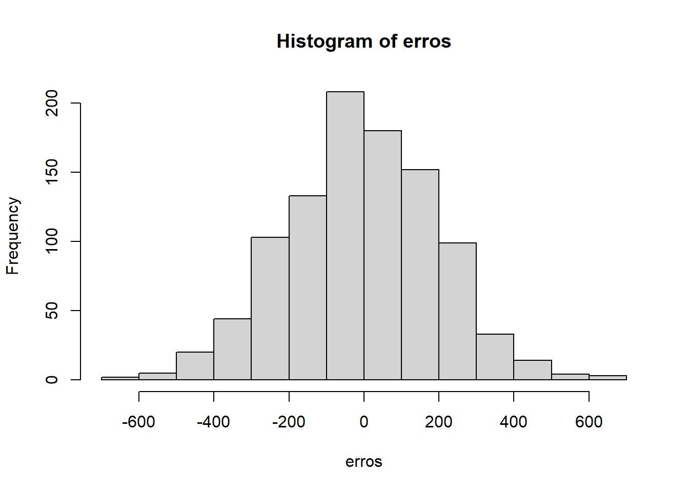

set.seed(42)4 Um pouco mais de cálculo
Introduction to Calculus and the Derivative, Moore and Siegel (2013)
Solução de alguns dos exercícios do capítulo.
Differential calculus thus deals with the study of infinitesimally small changes in a function. As we’ll see in Section 3 below, the derivative of the function \(f(x) = 3x\) is \(3\), which is the slope (rate of change) of the line \(y = 3x\). This example illustrates the way in which a derivative breaks down functions, removing information about their value at any point and providing just the value of the change at that point. (Moore and Siegel 2013, 104)
We put off until Chapter 11 of Part III of this book the most common use of integrals: in probability, specifically continuous probability distributions. There the integral will allow us to understand statistical inference with continuous variables and to compute expected values and expected utilities, which are vital when considering uncertainty of any sort in game theory. (Moore and Siegel 2013, 105)
Discrete change, then, is the first difference between two observations [the change from time \(t - 1\) to time \(t\); in percentagem terms, \(\frac{x_{t+1} - x_t}{x_t} \times 100\%\)]. It is a measure of change in a variable across two discrete moments in time. It follows that the size of a first difference is going to vary across different temporal scales. (Moore and Siegel 2013, 105)
[…] if we could evaluate the rate of change at a point on a function by taking the limit of the difference as the interval gets smaller and smaller, then that would tell us what the instantaneous rate of change was at the point (or moment in time). And that is precisely what the derivative does. (Moore and Siegel 2013, 106)
Let’s assume \(f(x) = 3x\). To compute the discrete rate of change between any two points, we look at the amount of change on the \(y\)-axis relative to a particular amount of change on the \(x\)-axis:
\[ m = \dfrac{ f(x_2) - f(x_1) }{ x_2 - x_1 } \]
This is the equation of the slope of a line.
The rate of change between two discrete points is just the slope of the line connecting those two points, known as a secant. (Moore and Siegel 2013, 107)
The derivative of a function is the instantaneous rate of change at a point. As noted in the previous section, we can take the difference between two points and calculate the discrete rate of change (i.e., the rate of change between any two points). But the derivative is the continuous rate of change (i.e., the instantaneous rate of change at any given point). (Moore and Siegel 2013, 110–11)
We can compute the derivative the following way:
\[ \underset{h \rightarrow 0}{\text{lim}} \dfrac{ f(x+h) - f(x) }{h} = f^\prime (x) = \dfrac{d}{dx} f(x) = \dfrac{dy}{dx} \]
The only thing missing from this formal presentation is the existence of derivatives. Derivatives can only be calculated at points at which limits exist, because derivatives are in a sense limits themselves, but it is also necessary for a function to be continuous at a point to have a derivative at that point.
The Rules of Differentiation, Moore and Siegel (2013)
Solução de alguns dos exercícios do capítulo.
The derivative is a linear operator, what implies that \(\frac{ d(f+g) }{dx} = \frac{df}{dx} + \frac{dg}{dx}\) and \(\frac{d(cf)}{dx} = c \frac{df}{dx}\).
Recall from Chapter 3 that a composite function looks like g(f(x)). To see why we’re bringing this up now, note that most complex functions can be written as composite functions. […]. Thus, we can break complicated functions down into the composition of simpler functions. If we can devise a rule for differentiating composite functions, a rule known as the chain rule, then we can simplify the differentiation of complex functions immensely. (Moore and Siegel 2013, 119)
[chain rule]: \((g(f(x)))^\prime = g^\prime (f(x)) f^\prime (x)\)
[product rule]: \(\dfrac{ (f(x) g(x)) }{ dx } = \dfrac{ d f(x) }{dx} g(x) + f(x) \dfrac{ dg(x) }{dx}\)
[quotient rule]: \(\dfrac{d}{dx} \dfrac{f(x)}{g(x)} = \dfrac{ \frac{df(x)}{dx} g(x) - f(x) \frac{dg(x)}{dx} }{ g(x)^2 }\)
[power rule]: \(\dfrac{d x^n}{dx} = n x^{n-1}\)
[exponentials]: \(\dfrac{d e^x}{dx} = e^x\), and \(\dfrac{d a^x}{dx} = a^x (\ln{(a)})\)
[logarithms]: \(\dfrac{d \ln{(x)}}{dx} = \dfrac{1}{x}\), and \(\dfrac{d \log_a{(x)}}{dx} = \dfrac{1}{x \ln{(a)}}\)
Anotações de aula
“Notebook notes”, com um aprofundamento em cálculo, neste link. As demais partes da aula trataram brevemente da ideia de processo gerador de dados.
Vamos simular o processo gerador de dados (data generating process) de renda
n = 1000
erros = rnorm(n, mean = 0, sd = 200)
educ = rpois(n, lambda = 7)
# a distribuição dos erros é normal com média 0 e sd 200
hist(erros)
# processo gerador de dados
renda = 1000 + 150*educ + errosDe fato, se estimarmos uma reta de regressão utilizando esses dados, devemos nos aproximar bem dos coeficientes definidos no processo gerador:
lm(renda ~ educ)
Call:
lm(formula = renda ~ educ)
Coefficients:
(Intercept) educ
1004.0 148.7 Agora, vamos criar uma nova variável que, predeterminadamente, já está correlacionada com os nossos erros. Isto é, trata-se de uma especificação que viola o ML4 (conforme vimos na última aula). Isso desrespeita a independência entre os erros e os regressores.
library(faux)Warning: pacote 'faux' foi compilado no R versão 4.4.3
************
Welcome to faux. For support and examples visit:
https://debruine.github.io/faux/
- Get and set global package options with: faux_options()
************n = 1000
erros = rnorm(n, mean = 0, sd = 200)
educ = rnorm_pre(erros, mu = 7, r = -.8)
renda = 1000 + 150*educ + erros
lm(renda ~ educ)
Call:
lm(formula = renda ~ educ)
Coefficients:
(Intercept) educ
2116.673 -8.889 Quando a regressão estimada não respeita os pressupostos, os resultados obtidos são absolutamente diversos em relação ao processo que efetivamente gerou o dado. O estimador utilizado para fazer a estimativa aplica uma assumption que o seu dado não respeitava.
Na regressão, temos uma espécie de “máquina” para representar o mecanismo das coisas. O que significa essa estimativa, então? Essa resposta está no cálculo; por isso, precisamos falar um pouco dele antes.